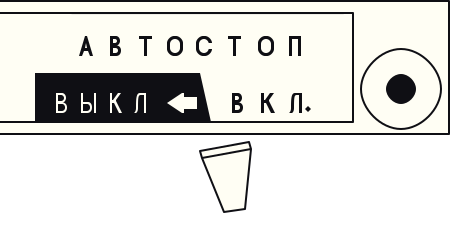

Поздравляем! Вы стали обладателем электрофона «Молодёжный».
Это руководство поможет Вам освоить необходимые навыки для прослушивания грамзаписей.
Электрофон — аппарат для воспроизведения звука с грампластинок, имеющий в своем составе усилитель сигнала и акустическую систему. Это значит, что Вам не потребуется никаких дополнительных устройств.
Электрофон «Молодёжный» представляет сообой ламповый переносной монофонический электрофон III класса с питанием от сети переменного тока.
Электрофон предназначен для электроакустического воспроизведения двух видов грампластинок:
«
»
1. Обычные грампластинки («патефонные»). Появились в конце XIX века и стали стандартом до середины XX. Они твёрдые и хрупкие. Обращайтесь с ними с большой осторожностью! На них может быть не указана скорость воспроизведения. Для их прослушивания установите переключатель скоростей в положение «78».
2. Долгоиграющие («виниловые»). Для увеличения времени проигрывания была уменшена ширина канавки, поэтому проигрываются такие пластинки более тонкой иглой на скорости 33⅓ или 45 об/мин.
Гибкие грампластинки воспроизводятся аналогично виниловым.
В звукоснимателе электрофона установлена головка пьезоэлектрического типа. Она требует бóльшую массу звукоснимателя, чем более новые магнитные головки, поэтому сильнее изнашивает грампластинки при прослушивании. Не забывайте об этом когда решите прослушать редкую или дорогую грампластинку.
Игложержатель звукоснимателя оснащён двумя корундовыми иглами для проигрывания обычных и долгоиграющих грампластинок. Смена игл производится переключателем на правой стороне звукоснимателя.
Положение «78» соответствует игле для обычных грампластнок, а «△» (моно) — для долгоиграющих.
Если в звукоснимателе не установлена головка, либо Вы хотите её заменить, следуйте данной инструкции.
Все манипуляции с головками производятся в нижнем положении переключателя игл («78» на звукоснимателе). Не прикасайтесь к корундовым иглам!
1. Освободите звукосниматель от скобы крепления.
2. Возьмите головку звукоснимателя между большим и указательным пальцами.
3. Вставьте заднюю часть головки в звукосниматель, затем переднюю до щелчка.

Cнятие головки производится в обратном порядке: поддерживая звукосниматель указательным пальцем, большим пальцем осторожно вытолкните головку.
После хранения электрофона в холодном помещении или перевозки в зимних условиях необходимо прогреть его до комнатной температуры в выключенном состоянии.
1. Освободите шнур питания и вставьте вилку в розетку сети переменного тока.
2. Поверните ручку регулятора громкости по часовой стрелке; при этом должен прослушиваться щелчок и загореться индикатор включения.
Перед проигрыванием лампы в усилителе электрофона должны прогреться до рабочей температуры в течение ~ 2 минут.
Во время работы электрофон нагреется, поэтому не следует эксплуатировать его вблизи нагревательных элементов или под солнцем.
1. Положите пластинку на диск.
2. Установите переключатель скорости и переключатель игл в положение, соответствующее пластинке, которую собираетесь проигрывать.
3. Приподнимите звукосниматель за специальный выступ и отведите вправо до упора, это включит электродвигатель.
Электрофон имеет устройсто автоматического выключения электродвигателя по окончании проигрывания стандартной пластинки — автостоп. Для воспроизведения нестандартных пластинок (с малым диаметром выводной канавки) ручку выключателя автостопа установите в положение «ВЫКЛ». Во время работы электродвигателя отверстие на шильдике с надписью «АВТОСТОП» перекрыто планкой красного цвета.

4. Перед проигрыванием пластинку рекомендуется очистить от пыли. Для этого поместите звукосниматель обратно на опору и проведите мягкой безворсовой салфеткой от края к центру пластинки.
5. Переведите звукосниматель влево, расположите торцевой выступ головки над началом записи, которую Вы желаете прослушать, и осторожно, не прилагая усилий, опустите его.
Громкость можно установить поворотом ручки регулятора громкости, тембр звучания — ручкой регулятора тембра.
1. Выключение двигателя производится устройством автостопа. Для ручного выключения двигателя необходимо включить автостоп и переместить звукосниматель влево за центр диска.
2. Закончив проигрывание, убедитесь в том, что двигатель выключен и обязательно переведите ручку переключателя скоростей в положение «0». В противном случае Вы испортите проигрывающее устройство электрофона.
3. Установите звукосниматель на опору и закрепите скобой.
4. Выключите электрофон, повернув ручку регулятора громкости против часовой стрелки до упора.
5. Отключите электрофон от сети.